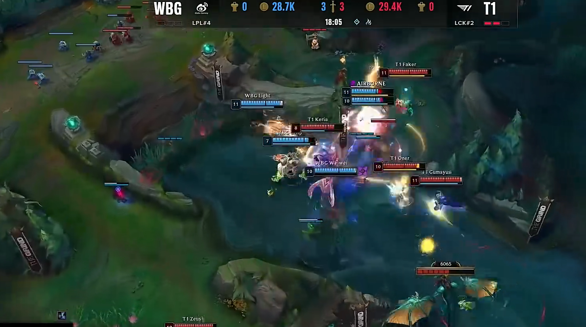
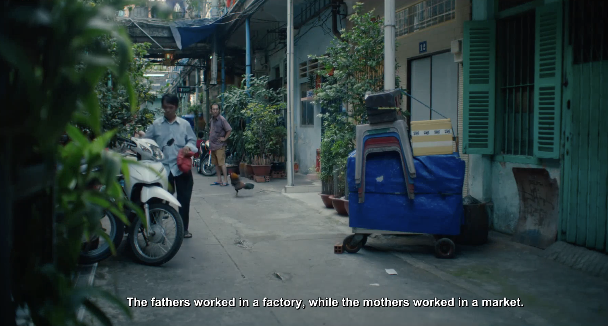

Recent advances in large multimodal language models (MLLMs) have enabled them to act as capable browsing agents, yet existing multimodal benchmarks such as MMSearch can often be solved through relatively fixed workflows that require little genuine multimodal reasoning. Many current benchmarks heavily rely on external image search where the MLLM primarily orchestrates rather than performs deep visual reasoning—when search engines retrieve highly relevant images, even unimodal LLMs can frequently answer by reasoning over accompanying text alone. This occurs because a single strong image search can surface pages whose surrounding text already contains the answer, making image search tools and MLLMs partially interchangeable as information sources.
In contrast, recent text-only browsing benchmarks like BrowseComp emphasize persistence and creative, multi-step search for hard-to-find, entangled information, achieving much lower success rates (GPT-4o scores below 1% in direct-answer settings and under 2% even with browsing tools). Building on these insights, MMSearch-Plus introduces a BrowseComp-style multimodal benchmark that combines the persistence and high-reasoning demands of challenging text browsing with truly multimodal workflows that cannot be reduced to simple search-and-retrieve patterns.
Our benchmark targets challenging scenarios that require: (1) fine-grained, exhaustive visual reasoning that compels models to mine subtle, localized cues rather than rely on a single dominant entity; (2) provenance and source verification under retrieval noise—discriminating authentic sources when image results are conflicting and validating images embedded in webpages; and (3) long, tool-augmented reasoning chains with systematic cross-modal evidence gathering and resilience to near-duplicates. Unlike existing benchmarks where answers can often be read directly from prompts or images, MMSearch-Plus requires extrapolating from spatial cues (micro-text, layouts, uniforms, signage) and temporal traces (broadcast overlays, seasonal context) to identify events, dates, or locations not explicitly present.
Three multimodal reasoning paradigms: 1. Without search: an MLLM reasons with its internal knowledge to answer a factual visual question (VQA); 2. Whole image search only: an MLLM combines its internal knowledge and the provided search results of an VQA's image; 3. MMSearch-Plus agentic framework: an MLLM can call a set of visual and search tools freely to extracts fine-grained visual clues and search with precision.

Example MMSearch-Plus item demonstrating our BrowseComp-style approach. Given a 2025 concert photo and the query "What was the singer's performance time?", the agent must extract multiple localized cues—micro-text/lyrics, performer identification, festival/brand signage, and distinctive stage props—then issue targeted iterative searches to (i) identify the artist/outfit, (ii) resolve the specific event and venue, and (iii) cross-validate official schedules to obtain the exact performance time. This exemplifies our emphasis on fine-grained multimodal reasoning with rigorous provenance verification under retrieval noise.
Question: What are the numbers in the score column that are blurred out in the picture?
Answer: 0 4 (11) 2 16
Question: What's the date and page of the newspaper?
Answer: May 10, 2007, Page 5A

Question: In this team fight, who was killed first?
Answer: WBG TheShy!
Question: Who are the performers?
Answer: Ebène String Quartet and Damien Bachmann

Question: From which show and episode is this?
Answer: Street Food (2019) Season 1 Episode 7
Question: What is the title of this paper?
Answer: MUCAR: Benchmarking Multilingual Cross-Modal Ambiguity Resolution for Multimodal Large Language Models
Our 311-task benchmark spans diverse domains including geography, sports, academia, film/TV, technology, games, vlogs, and music. Each item is systematically curated using our Spatial-Temporal Extrapolation procedure to ensure genuine multimodal difficulty that matches the persistence demands of challenging text-only browsing benchmarks.